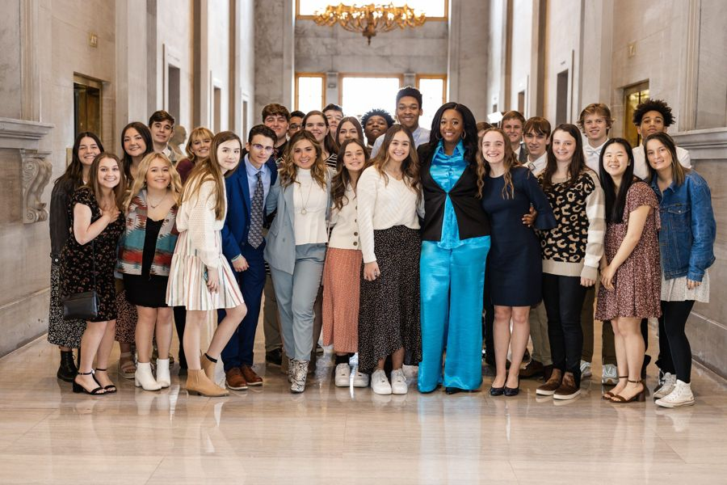
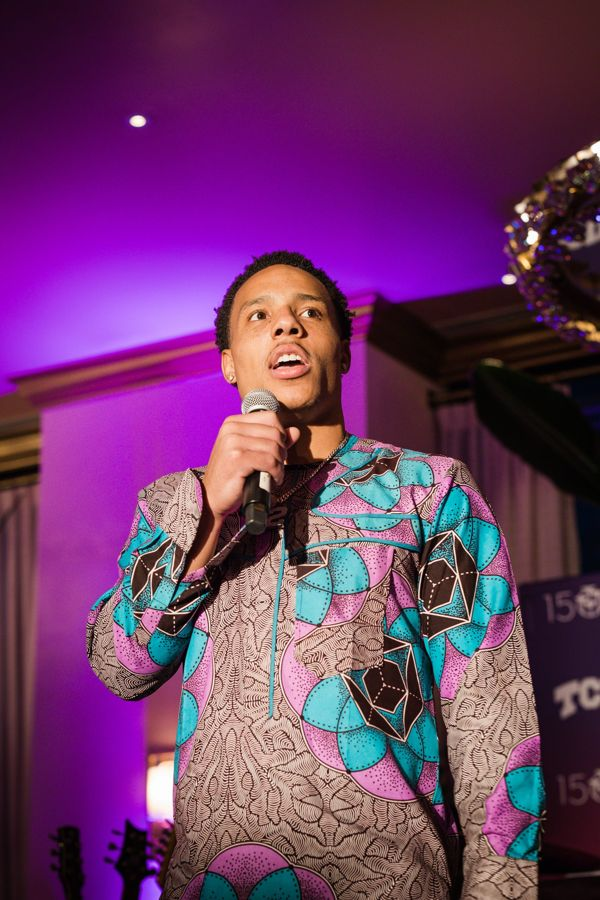
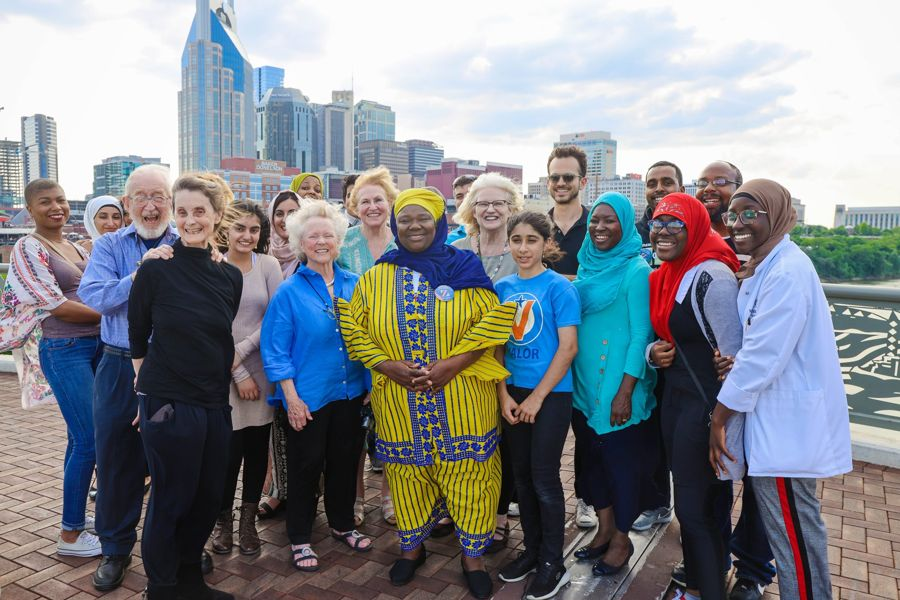

Digital marketingagency. One team, every channel.
Websites, social media, digital ads, email and text, video and design, all from one team that talks to each other. Leo Operations is headquartered in Nashville and works with clients nationwide.
What we do
We build and run the full digital presence: a fast website, social media management, paid ads on Meta and Google, email and text campaigns, and the photo, video and graphics that feed every channel.
Why one team helps
When the website, the ads and the social posts come from different vendors, the message can drift. We plan the whole program together, so the video you see in an ad matches the page it sends you to.
Recent digital work
Digital for Brandon Brown's 2026 U.S. Senate campaign in South Carolina, including his website. Digital consulting for Metro Nashville at-large races in 2019 and 2023. Websites for St. Andrew's Presbyterian Church, Drive Forward Academy, the Vote Influencer Network and candidates for judge, Congress and county office.
Who we serve
Small and mid-size businesses, nonprofits, churches, schools, candidates and advocacy organizations.
Everythingyou need.
Who wework with.

Elected officialsTN State Senator – London Lamar
Organizations & brandsNBA Memphis GrizzliesCampaignsMike Bloomberg For PresidentElected officialsDistrict Attorney of Nashville, TN – Glenn Funk
Metro & cityCouncilwoman At-Large – Zulfat SuaraMetro & cityCouncilwoman At-Large – Olivia HillQuestions, answered.
What does a digital marketing agency do?
It plans and runs your online marketing: website, social media, ads, email and text, and content. Leo Operations also produces the photo, video and design work in house.
Do you work with small businesses?
Yes. We work with small businesses, nonprofits and churches as well as larger organizations and campaigns.
Can you run political digital programs?
Yes. We have run digital for Metro Nashville at-large races in 2019 and 2023 and for a 2026 U.S. Senate campaign in South Carolina.
How do we get started?
Email us what you do, who you want to reach and what you have today. We reply with a plan.
Ready towin?
Tell us what you’re running for, building or launching. We’ll tell you how we make people remember it.
Email Leo Operations →